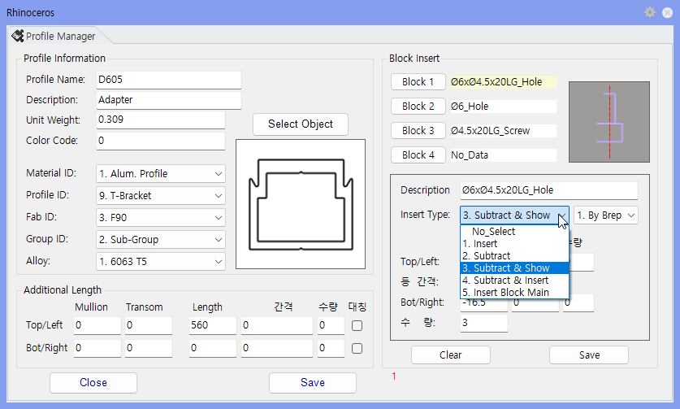

Block Data Input
Block Data는 Surface에 Block을 삽입하거나 Block 형상만큼 Subtract해야 할 때 사용합니다. Pname 창의 Block 선택란에서 사용할 Block과 배치 방식을 지정합니다.
단면에 들어갈 Block을 어떤 방식으로, 몇 개, 어디에 배치(또는 Subtract)할지 미리 정의할 때 사용합니다. Pname 창에서 Block-1 ~ Block-4를 설정해 두면 모델링 시 같은 규칙으로 부품이 반복 삽입되거나 Hole이 생성되어, 부품 배치를 일관되게 자동화할 수 있습니다.
Pname에서 Block-1 ~ Block-4 항목 중 사용할 Block을 선택합니다.
| 항목 | 설명 |
|---|---|
| Insert Block | 선택한 Block을 지정 위치에 삽입합니다. |
| Subtract | Block 형상만큼 Surface를 자르고 Block은 제거합니다. |
| Subtract & Insert | Surface를 자른 뒤 Block도 함께 배치합니다. |
| Subtract & Block Insert | Subtract와 삽입을 수행하고 Block 속성 정보도 함께 사용합니다. |
| Insert Block With Main | 가공도 출력 시 Main 그룹에 표현되도록 삽입합니다. |
| 항목 | 설명 |
|---|---|
| By Brep | 선택한 Surface를 기준으로 Block 위치를 계산합니다. |
| By Line | Wire Frame을 기준으로 Block 위치를 계산합니다. |
| Top/Left | 상부 또는 좌측 기준으로 위치, 간격, 수량을 입력합니다. |
| Bottom/Right | 하부 또는 우측 기준으로 위치, 간격, 수량을 입력합니다. |
| Interval / Quantity | 전체 길이를 기준으로 반복 간격과 개수를 지정합니다. |